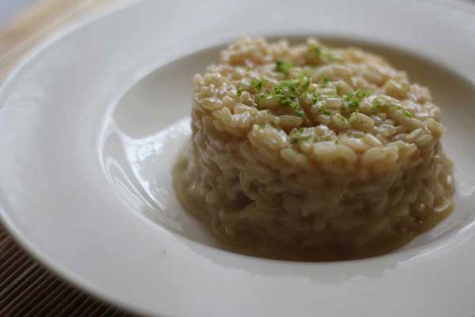

Risotto

Photo by Luca Nebuloni
This risotto is accompanied well by asparagus and white wine chicken or pancetta.
Serves up to 6 people.

Ingredients
- 2 Tbsp extra virgin olive oil
- 2-3 cloves garlic, minced
- 1 onion, chopped
- 2 cups Arborio rice
- 1 cup of crisp white wine
- 8 cups of chicken broth, simmering
- 1-1.5 cup Parmigiano-Reggiano cheese grated fine
- 1 Tbsp of butter
- fresh thyme or preferred herb to suit
Procedure
- Bring the chicken broth to a simmer in a pot. (Risotto will be made in a separate saucepan).
- Pour the oil into a medium pan at medium-high heat, then add the onions and garlic and sauté quickly until fragrant and golden. Now do the same with the rice coating them evenly in the oil, you will smell the rice begin to toast.
- Add in the white wine to the rice and stir frequently the rice will quickly absorb the liquid. Reduce your heat to low. Start adding the hot chicken stock. You will want to do this in small additions (I find using a mug to scoop it from the pot works best), stirring constantly after each addition and allowing the rice to absorb the broth. Continue to cook and stir the risotto until the rice is just tender and creamy. The Arborio rice will gradually release its starch making the extra liquid creamy, the creamy texture is important for a good risotto. This will take about 20-25 minutes from when you start adding the liquid.
- To finish stir in the Parmesan, butter and thyme. If you are adding any mushrooms, pancetta or other ingredients do it before this step.